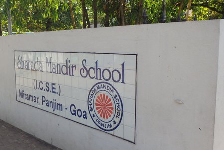

SHARADA MANDIR SCHOOL
 >
>ELEMENTARY, JUNIOR, MIDDLE, HIGH SCHOOL
Sharada Mandir School is a private nursery to higher secondary co-educational school in Miramar, Panaji, Goa, India. It was established in 1966 and affiliated to the Council for the Indian School Certificate Examinations. The school follows the Indian Certificate of Secondary Education (ICSE)[6] up till Std.10 and is now affiliated with the Indian School Certificate[7] for Std. 12, although, in its initial years, it had a strong flavour of the Cambridge syllabus for the higher classes. It has produced state level and national level toppers including Pratheek Rebello (4th in India in Std. 10 board exam). The school has a wide range of equipment and facilities, ranging from playgrounds, sand pits and yoga rooms to auditoriums and special-education centres. It also hosts events like the biennial EKTA gathering
